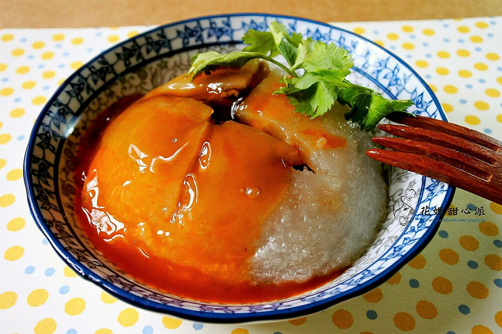

My Favorite Cuisine
Stinky Tofu

- Description
- One of the most iconic Taiwanese dishes, known for its strong aroma and unique flavor.
Taiwanese Meatballs

- Description
- A delicacy made from a mix of meat and vegetable fillings, wrapped in a sticky rice dough, known for its tender texture and savory taste.
Braised Pork Rice

- Description
- A comforting bowl of marinated pork over rice, a staple of Taiwanese cuisine that offers a harmonious blend of flavors.